原文连接:https://www.cnblogs.com/lixinjie/p/taste-spring-016.html
在容器启动快完成时，会把所有的单例bean进行实例化，也可以叫做预先实例化。
这样做的好处之一是，可以及早地发现问题，及早的抛出异常，及早地解决掉。
本文就来看下整个的实例化过程。其实还是比较繁琐的。
一、从容器中找出所有的bean定义名称
因为不知道谁是单例bean，所以只能先全部找出来。如下图01：
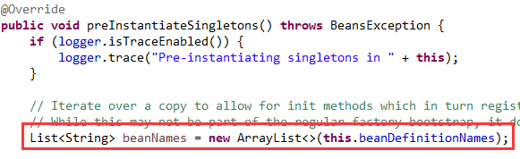
二、循环遍历所有的bean名称，检查是否符合条件
首先要合并bean定义，因为bean定义可以有父子关系，类似继承。
然后这个合并后的bean定义必须是，非抽象的，单例的，非延迟初始化的。
那么它就满足条件，如下图02：
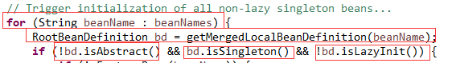
三、判断是否为FactoryBean<?>类型
如果不是的话，说明该beanName对应一个普通的bean，可以直接实例化。
如果是的话，说明该beanName对应的是一个工厂，这个工厂本身是单例的。
但是它里面生产的bean不一定是单例的。即使是的话，还要判断是否要积极的去初始化工厂里的bean。
具体的判断如下图03：
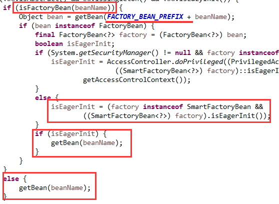
编程新说注：提到FactoryBean<?>类型，是否想起&符号的作用呢？
四、开始进入众所熟知的getBean(String name)方法
在上一图中可以看到Spring对bean的实例化时竟然是调用的getBean(..)方法。
这样共用一套代码，简单省事。不仅如此，当获取一个bean的依赖时，也可以用该方法。
这样getBean(..)就是一个综合方法，没有bean实例就生成，有的话就直接返回。
如下图04：
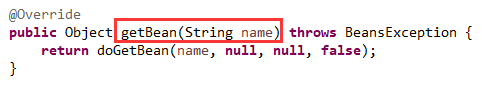
五、对手工直接注册的单例对象进行检测
bean实例除了可以用bean定义生成外，还可以由开发人员直接注册一个bean实例。
这样在使用bean定义生成实例前，先使用beanName去手动注册的bean实例集合中找一下。
如下图05：
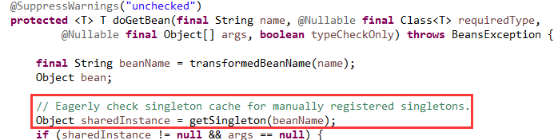
如果找到了，就不用生成了，否则就会根据bean定义生成bean实例。
六、对FactoryBean<?>类型的检测
这和上面提到的是一个类型，它是一个工厂，可以认为是包裹在了实际bean实例的外面。
这样可以有一些特殊的作用，不好之处就是每次都要检测下，然后从它内部拿出实际的bean实例。
具体检测过程不再展开，如下图06：
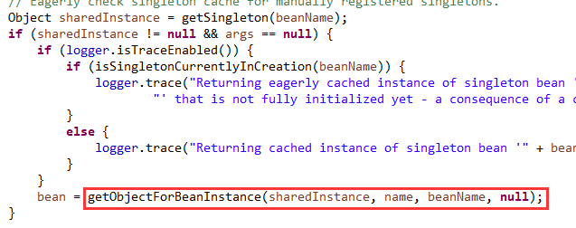
七、对类型进行转换，如果有必要的话
上面我们仅仅是用beanName去手动注册的实例集合中寻找，万一这个手动注册的实例类型和bean定义要求的不兼容呢？
因此要进行类型检测与转换，实在不行就抛异常，如下图07：
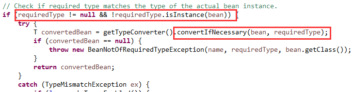
如果成功的话，就表明手动注册的bean定义实例满足要求，将它返回即可。
编程新说注：如果在第五步没有找到beanName对应的手动注册的bean实例，那开始根据bean定义来生成bean实例。继续往下看。
八、准备好显式指定的依赖，如@DependsOn指定的
先获取合并后的bean定义，然后从中读出显式指定的依赖，并逐个处理。
使用registerDependentBean(..)将依赖关系写入容器，由容器维护。
并同样使用getBean(..)方法实例化这些依赖，一模一样的套路。
其实就是递归，如下图08：
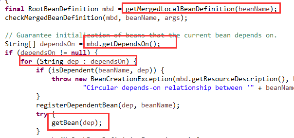
编程新说注：接下来使用createBean(..)方法正式开始创建bean
九、解析出bean的Class<?>
因为在注册bean定义时并不一定加载类，可能只是一个字符串的类名称。
所以要根据类名称去加载类，并得到类的Class<?>。如下图09：
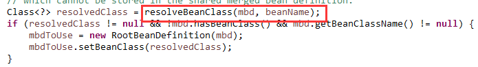
十、调用bean后处理器的postProcessBeforeInstantiation方法
此时还处在实例化之前，让用户有机会来提供一个bean实例或代理。
这样Spring就不再进行后续的实例化步骤，直接返回这个用户提供的。
如果用户没有提供的话，Spring继续后续的处理。如下图1011：
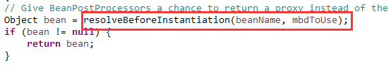
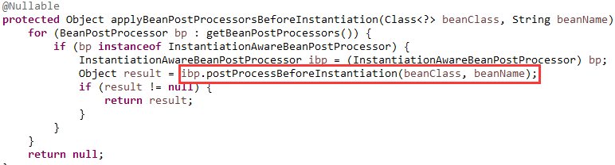
十一、调用InstanceSupplier生成bean实例，如果有的话
在注册bean定义时，可以设置一个Supplier<?>类型的函数式接口。
其实就是用户可以提供一段创建bean实例的代码，这样Spring就使用它来创建bean实例。
然后将这个实例返回即可，如下图12：
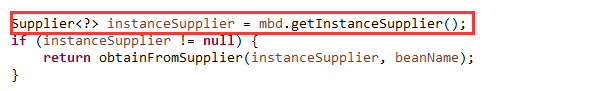
十二、通过FactoryMethod来生成bean实例，如果FactoryMethodName不为null的话
如下图13：
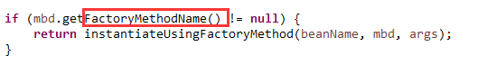
FactoryMethod就是工厂方法，说明bean的实例是通过调用这个工厂方法返回的，而不是通过反射调用构造函数返回的。
工厂方法有两种，静态的和实例的。如果是实例的，那还要有一个FactoryBeanName来指定一个bean名称，根据它可以从容器中获取一个对象，用作工厂。
如果是静态的，那就不需要实例了，直接把bean定义中的类型作为工厂类即可。如下图14：
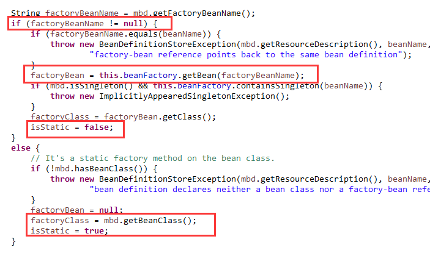
然后根据工厂方法的名称，从bean定义中解析出对应的Method对象。然后再解析出构造方法参数用作工厂方法的参数。
最终通过反射调用这个工厂方法，获取返回值，就是bean实例了，如下图15：
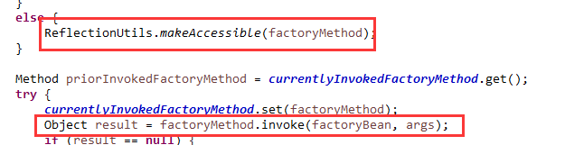
这个bean实例会用一个BeanWrapper接口进行包装，这个接口提供一些基础的JavaBean功能，如数据的类型转换然后再进行属性绑定等。
十三、调用bean后处理器的determineCandidateConstructors方法来确定候选构造方法
如下图16：
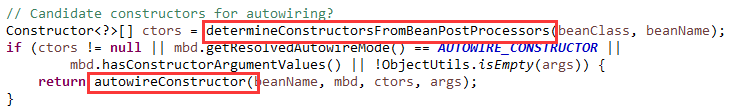
这里涉及到从多个候选构造方法中选出一个最合适的，是一个比较复杂的过程。
最后也是通过反射调用构造方法，获取到bean的实例。如下图17：
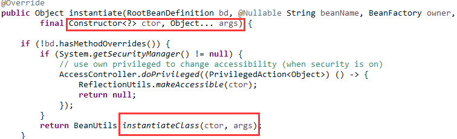
然后也用BeanWrapper接口进行包装。
十四、使用更适合的构造方法来实例化，如果有的话
如果上一步没有执行的话，则使用bean定义中更适合的构造方法，如下图18：
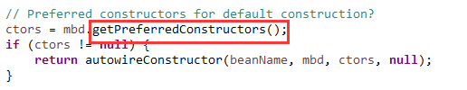
十五、使用默认无参的构造方法来实例化
如果上一步没有执行的话，则使用默认无参构造方法，如下图19：
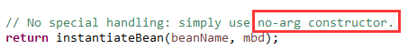
编程新说注：至此bean实例已经创建好了。
十六、应用bean后处理器的postProcessMergedBeanDefinition方法
上两篇文章详细介绍了bean后处理器，主要是用来实现注解的功能的。
如下图2021：
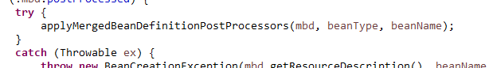
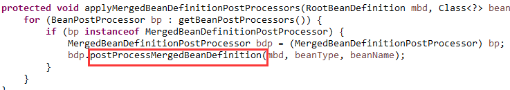
十七、此时就可以暴露早期的bean引用了，如果需要的话
如允许循环引用的话，就需要这个操作，如下图22：
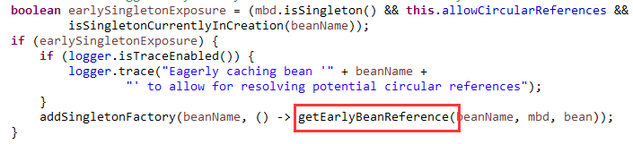
十八、应用bean后处理器的postProcessAfterInstantiation方法
如下图23：
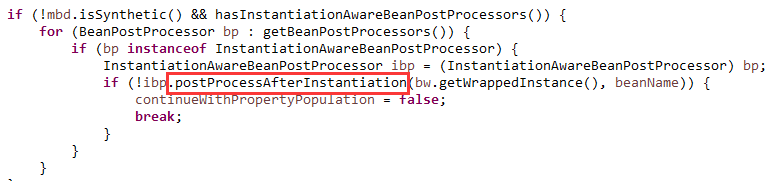
且该方法如果返回false，该bean实例后续的bean后处理器操作将不再执行。
十九、根据设置的自动装配类型处理自动装配问题
如下图24：
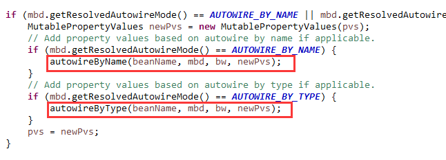
如果配置的是按名称自动装配，则会把所有setter方法中参数类型是非基本类型的都找出来。
然后按照属性名称从容器中找出同名的bean，作为属性值保存起来以备后用。如下图25：
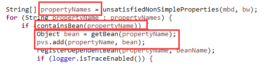
如果配置的是按类型自动装配，则会把所有setter方法中参数类型是非基本类型的都找出来。
然后按照属性类型从容器中解析出对应的bean，作为属性值保存起来以备后用。如下图26：
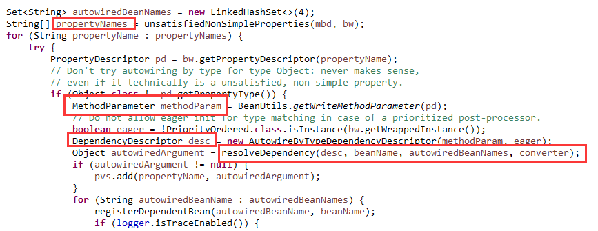
如果看了上两篇文章，会发现这里按类型从容器中解析bean的套路和上两篇一模一样。
编程新说注：
以上的setter方法上不需要标任何注解，因为显式设置了自动装配类型。
而默认情况其实是没有设置的，即AUTOWIRE_NO，所以我们要标上@Autowired注解。
二十、应用bean后处理器的postProcessProperties方法
在这一步其实是完成了依赖的注入，如下图27：
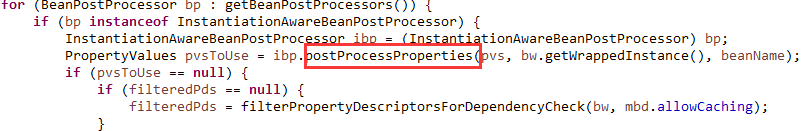
二十一、其余属性值到bean属性的绑定
这一步是由BeanWrapper这个接口完成的，如下图28：
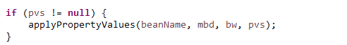
编程新说注：至此bean的所有依赖装配和属性设置都已完毕。
二十二、应用bean后处理器的postProcessBeforeInitialization方法
这一步就开始执行初始化方法了。如下图2930:
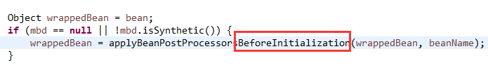
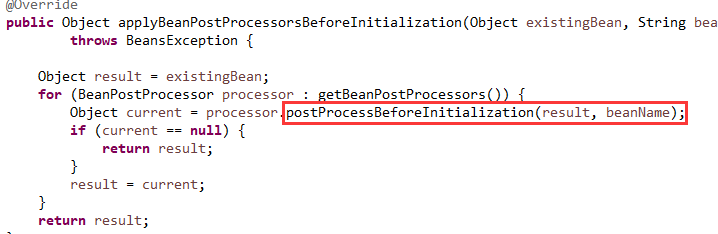
二十三、执行bean的初始化方法afterPropertiesSet()
如果bean实现了InitializingBean接口，此刻会调用它唯一的方法。
如下图31：
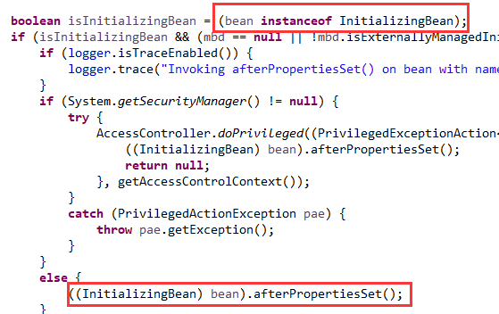
二十四、执行bean定义中指定的初始化方法initMethod
如果bean定义是使用@Bean注册的，可以通过设置注解属性指定初始化方法。
如下图32：
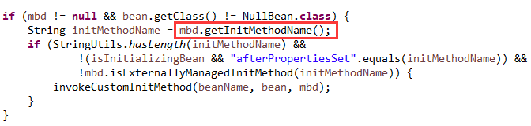
编程新说注：
之前文章中写过，有三种方式可以指定初始化方法：
1）@PostConstruct注解，2）InitializingBean接口，3）@Bean注解
这里有两个问题需要记住：
1）如果两种或三种方式都指向了同一个方法，这个方法也只会被执行一次。
2）三种方式指定的初始化方法的执行顺序就按刚刚列出的1、2、3这个顺序。
二十五、应用bean后处理器的postProcessAfterInitialization方法
如下图3334：
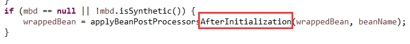
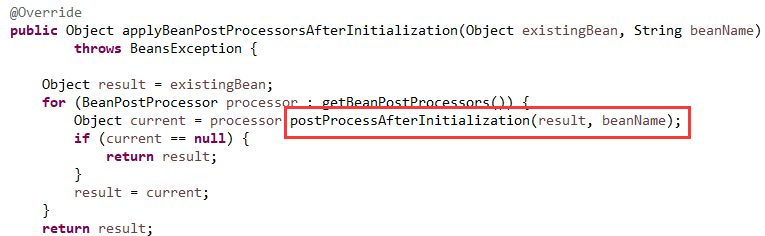
编程新说注：至此bean的初始化工作已经完成。
二十六、注册bean销毁时要执行的代码，如果需要的话
除了使用了之前说过的三种方式指定过销毁发方法之外，如果bean实现了AutoCloseable接口也算。
如果使用@Bean注册且没有指定销毁方法，那么默认把close和shutdown方法作为销毁方法。
这些情况都是需要注册的，如下图35：
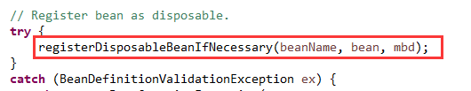
编程新说注：至此bean实例本身已经准好了。
二十七、缓存单例的bean
如果这个bean是单例的，而且是新创建的，会把它缓存到容器里，以备后用。
如下图36：
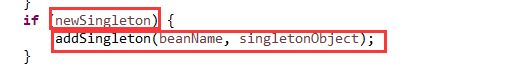
二十八、进行Scope处理
如果一个bean指定了Scope，即它的生命周期既非单例也非原型而是属于某一个范围。
Spring暂时支持的范围如下图37：
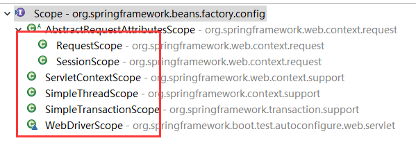
实现原理其实很简单，比如Session范围，那就先从Session中获取，没有的话生成一个放入Session中即可。
二十九、对FactoryBean<?>类型的检测与处理
刚刚创建的这个bean可能是FactoryBean<?>类型，即一个工厂。而我们想要的可能是工厂里生成的bean。
简单来说，那就从工厂中把bean拿出来即可。
三十、类型的检测与转换
最终得到的bean实例可能与期望的类型不兼容，此时就要进行类型转换。
转换成功的话就返回，失败的话就抛出类型不匹配异常。
至此一个bean的创建工作已经全部结束。
整体流程步骤就是这样，只是忽略了一些和流程无关的细节实现。
总结与感谢：
耗时近三个月，看了很多Spring的源码，写了16篇《品Spring》系列文章。
从bean定义是什么入手，到现在bean实例已经创建好且可用了。
也算是一个阶段性的闭环和里程碑了。感谢每次都点开公众号的读者。
希望都能学到一些知识，也欢迎持续关注本号后续文章。
>>> 品Spring系列文章 <<<
品Spring：SpringBoot和Spring到底有没有本质的不同？
品Spring：SpringBoot轻松取胜bean定义注册的“第一阶段”
品Spring：SpringBoot发起bean定义注册的“二次攻坚战”
品Spring：注解之王@Configuration和它的一众“小弟们”
品Spring：对@PostConstruct和@PreDestroy注解的处理方法
品Spring：对@Autowired和@Value注解的处理方法
>>> 热门文章集锦 <<<
爸爸又给Spring MVC生了个弟弟叫Spring WebFlux
【面试】吃透了这些Redis知识点，面试官一定觉得你很NB（干货 | 建议珍藏）
【面试】如果你这样回答“什么是线程安全”，面试官都会对你刮目相看（建议珍藏）
【面试】迄今为止把同步/异步/阻塞/非阻塞/BIO/NIO/AIO讲的这么清楚的好文章（快快珍藏）
【面试】一篇文章帮你彻底搞清楚“I/O多路复用”和“异步I/O”的前世今生（深度好文，建议珍藏）
作者是工作超过10年的码农，现在任架构师。喜欢研究技术，崇尚简单快乐。追求以通俗易懂的语言解说技术，希望所有的读者都能看懂并记住。下面是公众号和知识星球的二维码，欢迎关注！